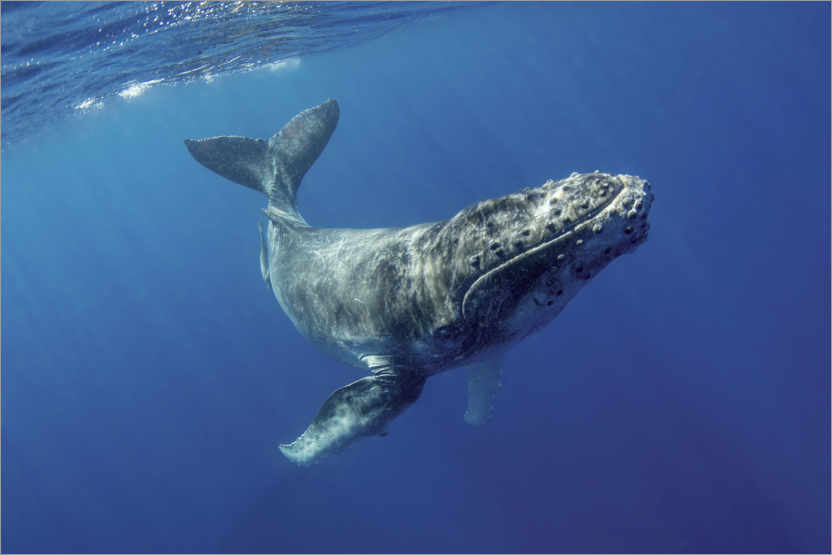

Orcas viven en todos los océanos del mundo. Estos mamíferos prefieren aguas frías, particularmente en las regiones polares. Las poblaciones de orcas más grande se encuentran en el Artico y en Antártida.
Se estima que viven 160,000 orcas en las aguas alrededor de Antártida. También se encuentran en todos los mares incluyendo el Mediterraneo oeste, el Mar Arabe, y el Golfo de Adén. Usualmente se encuentran dentro de 500 millas de la costa. Estos mamíferos prefieren aguas profundas.
No es común encontrarlas en zonas de marea tales como bahias llanas, mares rodeados de tierra, y estuarios. Las orcas migran de lugar a lugar dependiendo de la disponibilidad de comida y la formación de hielo en las aguas congeladas.
Las orcas forman vainas mezcladas con varones, hembras, y crías. La vaina de un orca es un grupo de familia muy unido, y contiene miembros que permanecen juntos toda una vida. Cuando dos o más vainas se unen, estos grupos se conocen como “supervainas.” Una supervaina puede contener más de 150 individuos.
Estudios de orcas han demonstrado que estos mamíferos pertenecen a uno de dos grupos – un grupo “transiente” o uno “residente.” Grupos transientes forman vainas más pequeñas de 1-7 individuos y se mueven a través de areas oceánicas grandes. Estos grupos se alimentan mayormente de mamíferos, no vocalizan frecuentemente, y permanecen debajo del agua por entre 5-15 minutos a la vez. Los transientes tienen también una aleta dorsal puntiaguda en el centro de la espalda.
A diferencia de los transientes, los residentes forman vainas más grandes de 5-25 individuos, permanecen en un area más pequeña, y se alimentan mayormente de peces. Este grupo vocaliza más frecuentemente y permanece debajo del agua por menos tiempo (menos de 4 minutos a la vez.)
|
|
|
|  |
|
|